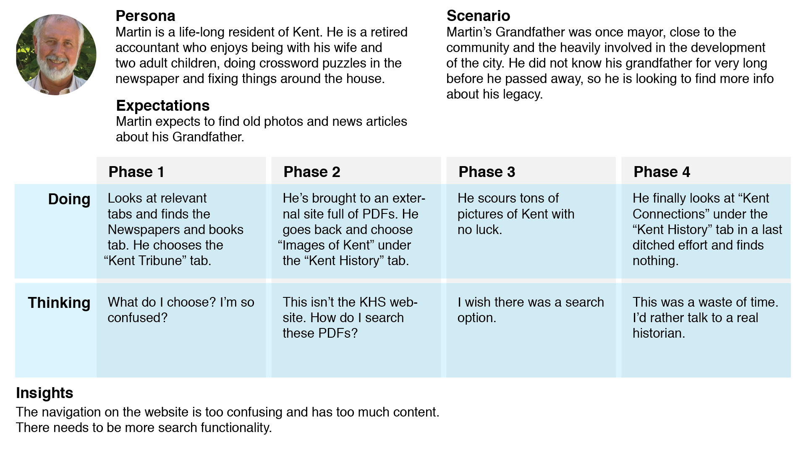

Kent Historical Society
Kent Historical Society is a "not you grandma's historical society" located in Kent, Ohio. This vibrant group of preservationists and history buffs was looking for a new website to fit their needs and attitudes. In conjunction with IdeaBase in Kent, Ohio I worked with a team of designers and content management specialists as a UX designer to help develop a new website for the organization.
View the live prototype here or keep reading to hear about the process.
The Problem
The Kent Historical Society’s original site had a myriad of problems. Aside from being visually unpleasant and not mobile friendly, structurally there were too many navigation tabs making it too confusing for users. There was too much content to make the website even close to being an easy, informative experience. Finally, as they rely heavily on donations, there was no clear place to donate.
The Process
The UX team had our work cut out for us. We began by doing preliminary research, meeting with the client and touring the Historical Society. We started designing by journey mapping to better empathize and understand what users might be going through. To get actual user feedback we conducted surveys and user interviews. Below is an example of a persona and jouney used to evaluate the original website.

We did a content audit to help cut down on the text, making the most useful information readily available.
To fix the navigation, we took the content and organized it into new categories. We decided that a secondary navigation was necessary to create a hierarchy, making “Join, Learn and Give” a main focus.
With all of our research we were able to wireframe five main templates. To get feedback, we conducted user testing throughout the design process. Finally, we were able to develop the basic structure of the website that the design team could add CSS and JavaScript to.
The Outcome
The outcome created new opportunities for growth and preservation. The clients finally felt like their voice and mission were clear. The new design and structure allowed users to easily access and share information, accept donations and allow new members to join digitally. Their old, outdated, website now has its spot in history.